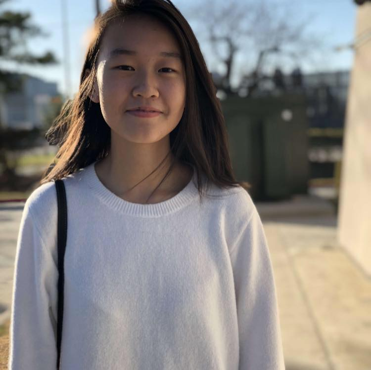
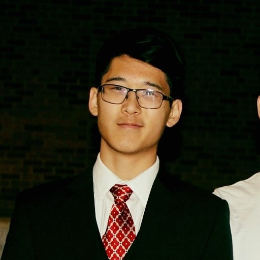
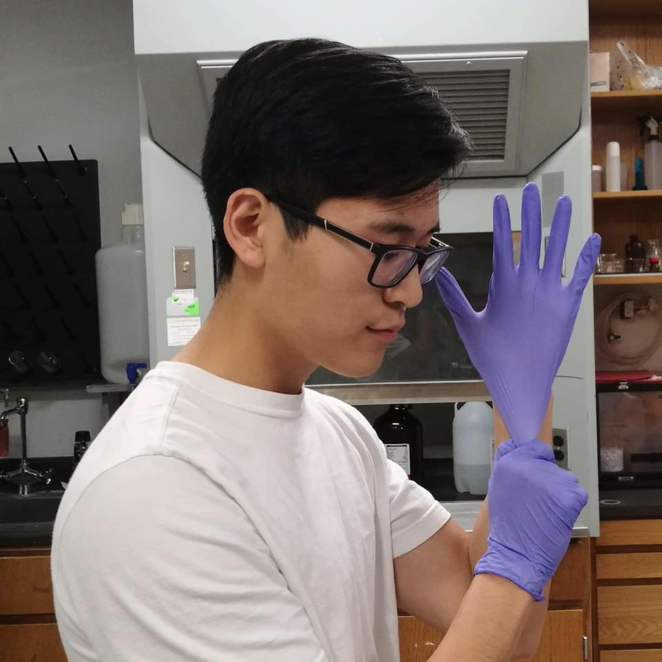

About Us
As active researchers, we realized how difficult it was for our fellow high school friends to find research opportunities. Through surveys, we discovered that two of the main obstacles impeding research opportunities for inquisitive students were (1) accessibility to labs and (2) not knowing how to find research opportunities. It was evident that these two factors limit scientific innovation and the success of students. Thus, we created Scope Research, an innovative platform to help students forge a path on the frontier of curiosity-driven research.

Emily Zhou
Co-Founder
Emily Zhou is a Rice University freshman. She has conducted research in UNT, Rice, and Baylor College of Medicine labs. She has received several monetary scholarships for research and presented at the IBB symposium at Rice. She recently submitted her first paper for publication.
Kevin Yao
Co-Founder
Kevin Yao is a Brown scholar at TAMU. He has conducted research in a nanomaterials laboratory, where he published 5 papers and received distinctions such as the Goldwater Scholarship and the Davidson Fellowship.
Steven Yao
Co-Founder, Web Designer
Steven Yao is a freshman at UT Austin taking honors computer science classes. He has 2 years of research experience and published a paper under Kevin's guidance. He loves to create things with full stack web development is always eager to learn new things.
Link to his Project Portfolio